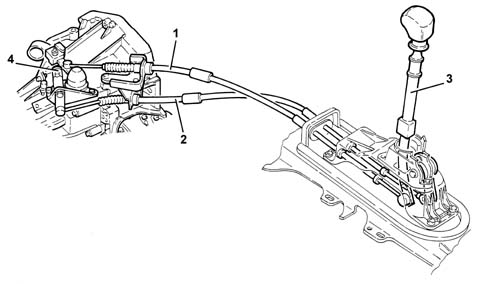

2125C MANUAL GEARBOX EXTERNAL CONTROL (CABLES)
- Path
- Descriptions > 21 GEARBOX UNIT > 2125 MANUAL GEARBOX EXTERNAL CONTROLS > 2125C MANUAL GEARBOX EXTERNAL CONTROL (CABLES)
- Kind
- system description
- Applies to
- all engines; all production periods
- Interactive page
- https://sloeber94.github.io/elrnDB-aGt/en/#/125000333
Applies to: all engines; all production periods
COMPOSITION
TYPE
Current developments
The twin cable external control is made from plastic materials with excellent properties (resistance to fatigue, self-lubrication capacity, reduced weight)
This type of control combined with a distribution of the inertia masses towards the gearbox has made it possible to achieve:
- a high level of driving comfort due the action of filtering the vibrations on account of the lightness of the external control components;
- precise manoeuvring and a reduction of the matching clearances.
The external control is equipped with an inhibitor device for the engagement of Reverse gear which, by means of a travel inhibitor during selection, guarantees greater safety against accidental manoeuvres.
The adjustment of the gear selector/engagement cables is carried out using the special nut near the gear selector lever.

1 - Gear engagement cable
2 - Gear selector cable
3 - Reverse gear engagement inhibitor device
4 - Gear selector/engagement cables adjustment bracket